Extinction
Extinction je četvrta story mapa ARK-a koja je izašla 6. studenog 2018. kao plaćeni DLC koji je tada koštao €19.99.
Ova mapa je smještena na Zemlji, a ne na ARK-u za razliku od prijašnjih mapa.
Zemlja je u postapokaliptičnom stanju i prepuna korupcijom i koruptiranim dinosaurima te njom vladaju titani.
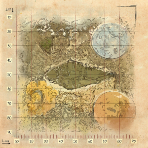
Po čemu je ova mapa posebna:
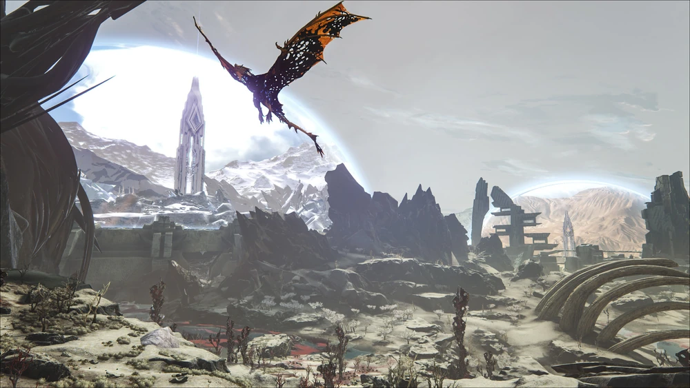
Ova mapa je smejštena na post-apkolaptičnoj Zemlji koruptiranom elementom.
Korupcija se proširila na okoliš, životinje pa čak i u jezgru Zemlje što je uzrokovalo planet da se prestane okretati što je dovelo do stalnog dana.
Na ovoj mapi je većinom pustoš sa propalim gradom u sredini, no sastrane imaju male kupole koje sadržavaju snježni i pustinjski biom.
Ova mapa se počinje više bazirati tek opremom i uz to dodaje i Mek-ove. Ogromna robotska odjela namjenjena za borbu protiv titana.
Mapa je prekrivena koruptiranim dinosaurima. Oni su jači od normalnih i nemogu se pripitomiti.
Zemljom trenutno vladaju Titani, ogromna stvorenja veličine nebodera nastala od elementa.
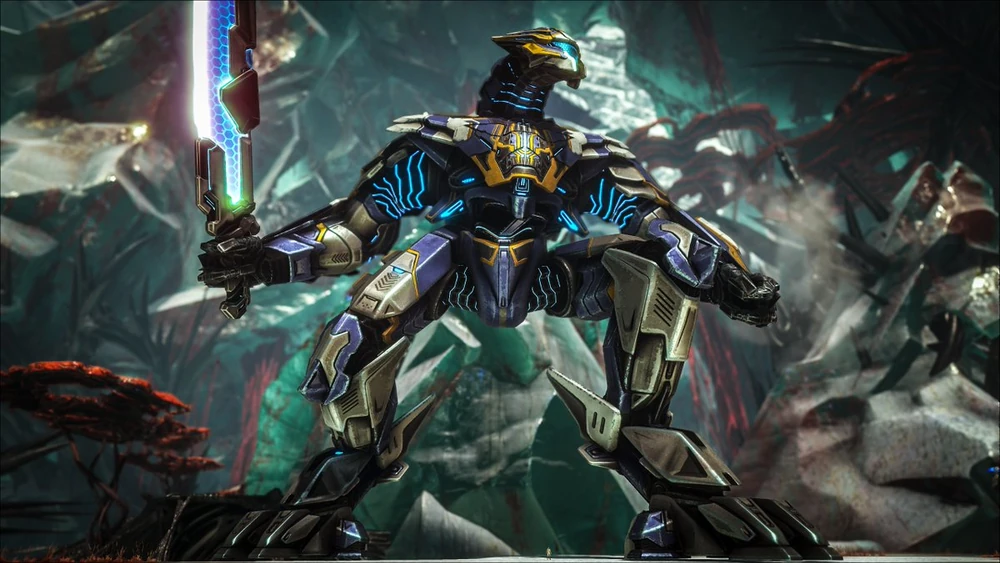
Stvorenja koja se ovdje mogu naći:
Snow Owl je velika snježna sova i stvara se u Snow dome-u.
Jedna je od najbržih ptica u igri i ima jedne od najkorisnih ability-a u igri.
Ima mogućnost zamrznuti neprijatelje oko sebe, a ako to napravi nekim od vaših pripitomljenih dinosaura, njih će počet heal-at.
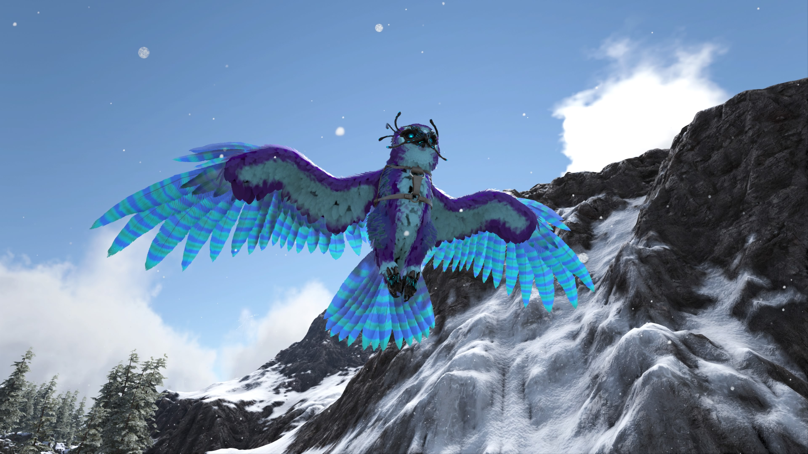
Gacha je pasivno stvorenje koje se nalazi u Sunken Forest-u.
Kada je pripitomljen možete ga hraniti kamenjem nakon ćega će s vremenom mu otpasti kristali s leđa koja se mogu pretvoriti u loot.
Loot može biti nasumićan kod svake gache, a može biti bilo koji resurs pa ćak i metal.
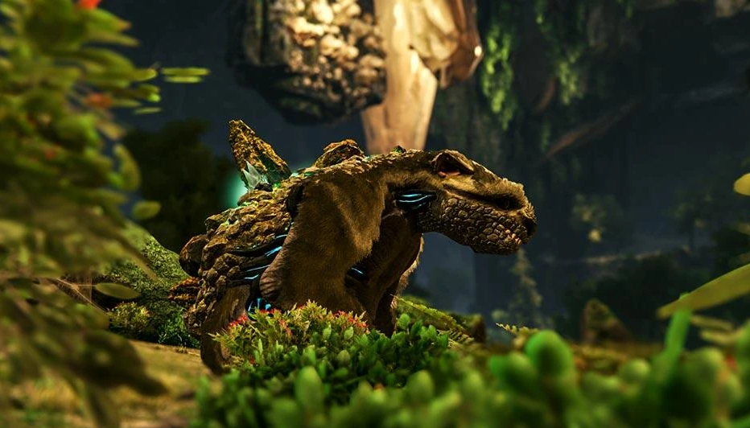
Velonasaur je mutirani dinosaur vekićine raptora koji se stvara u Desert dome-u.
Poseban je po tome što sa svoje glave može pucati bodlje poput turreta.
S obzirom da je relativno lagan za pripitomit, odličan je dinosaur za početak ove mape.
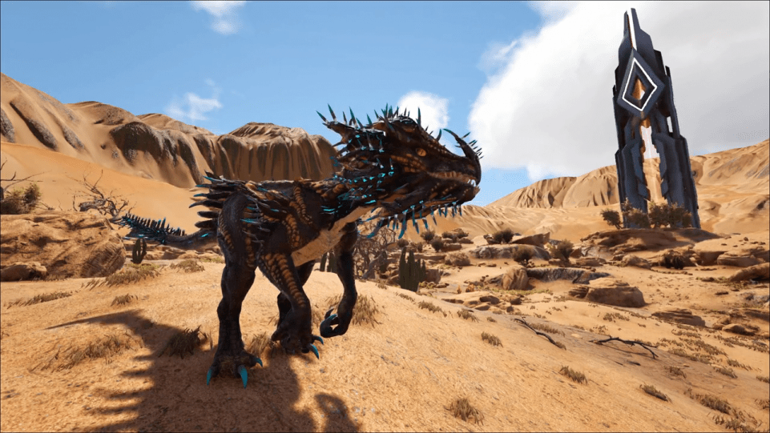
Biomi:
Sanctuary također poznat kao City, je napušten grad koji se nalazi na sredini mape.
Ovo je najsigurnije mjesto ove mape, ali idalje nije potpuno sigurno.
Ovdje se nalazi više malih dinosaura uključujući robote koji patroliraju gradom i veoma su agresivni.
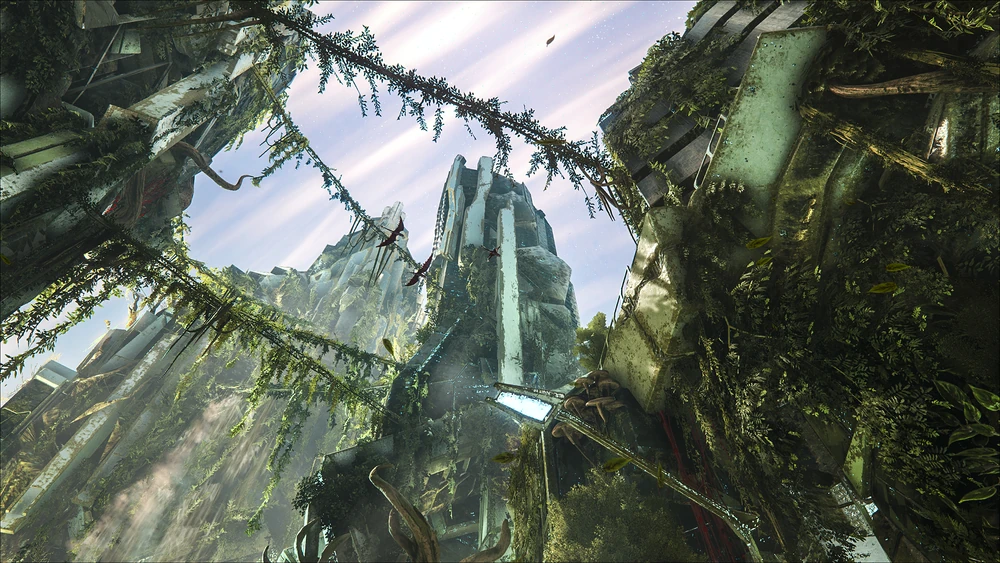
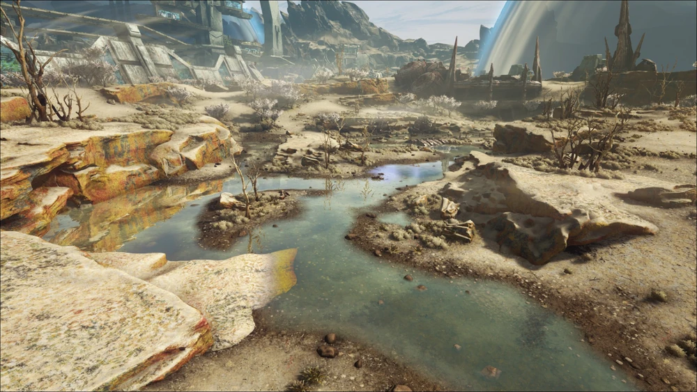
Wasteland je vanjski dio grada i prekriva cijeli ostatak mape.
Ovdje se nalaze koruptirani dinosauri i ovdje padaju OSD-evi te se stvaraju Element Vein-ovi.
Sjeverni dio Wastelanda je najopasniji dio ne samo ove mape, nego cijele igre jer se stvaraju koruptirani giganotosauri, koruptirani vywerni i svi ostali koruptirani dinosauri u ekstremnim brojevima..
Desert Dome je kupola koja se nalazi u donjem desnom kutu mape.
Ovdje se stvaraju dinosauri i ostala stvorenja sa Scorched Eartha osim Vywerna, te se mogu naći i pustinjski resursi.
Ovo je relativno sigurni dio mape s obzirom na Wastelands i mogu se naći odlična stvorenja za početak.
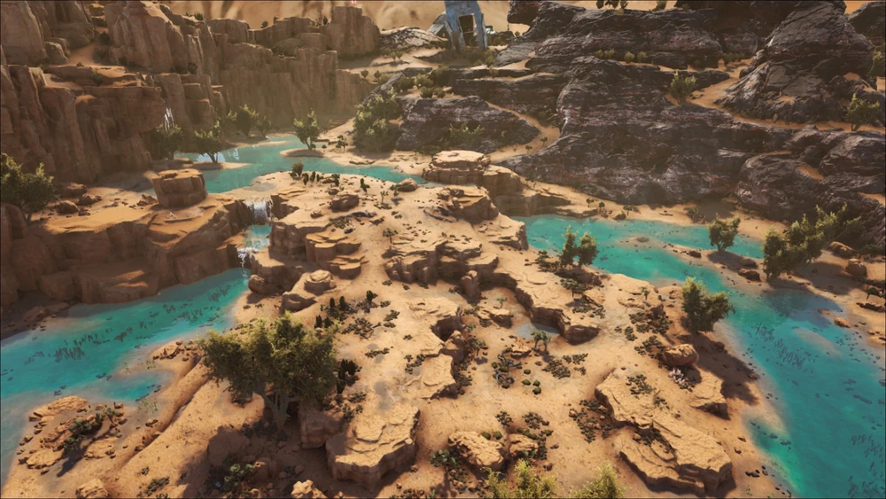
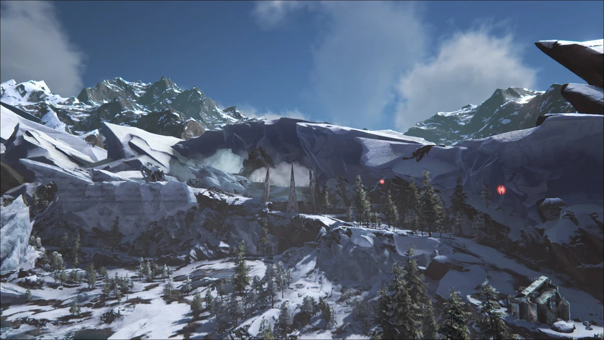
Snow Dome je kupola koja se nalazi u gornjem desnom kutu mape.
Malo je opasnija od pustinjske kupole jer su temperature bolje ekstremne i stvaraju se mnogo opasnija i agresivnija stvorenja.
Okolo kupole se stvaraju normalni Giganotosauri koji su skoro pa najpotrebniji dinosauri ove mape radi finalnog boss-a.
Sunken Forest je šuma koja se nalazi na dijelu tla koji je propao ispod ostatka zemlje.
Nalazi se u gornjem lijevom kutu mape i služi kao mala verzija Aberration-a.
Ovo je relativno sigurno mijesto i mogu se nači dinosauri i ostala stvorenja korisna za početak igre.
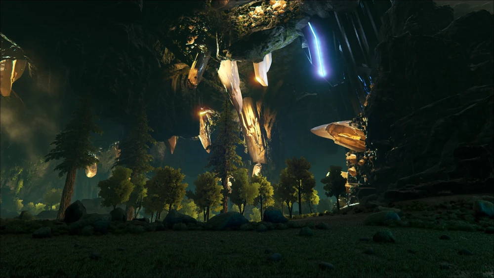